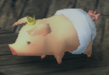

| ➤ Guild Poogie : | ※ When reaching Guild Rank 6, the leader from the guild can purchase Guild Poogies, and give them different clothes. The clothes impact the skills Guild Poogies activate.
※ Guild hunters can then active one Guild Poogie skill by giving it food until the "Seems to love it!" message appears (usually takes 2 to 4 tries using Poogie Crackers).
※ Only one Guild Poogie skill can be activated at a time, and the effect lasts until logout. The skill is then active for every quests, including Hunting Road. |
|
| Poogie Thrift |  |
Red & White | Flutes, Pick axes and Bugnets are 1.25x less likely to break. Stacks with Whim. |
| Guild Rank: 6 | |
|
| Poogie Discount |  |
Naked Emperor | Discount of 10% on Furniture stores purchase price (Material & Zenny). |
| Guild Rank: 6 | | Wht Durable Fabric x45 | Appropriate Parts x15 |
|
|
| Poogie Taijutsu | |
Soporific White | Halves stamina consumption when evading and guarding. |
| Guild Rank: 6 | | Wht Durable Fabric x75 | Flexible Medicine x22 | Appropriate Parts x30 |
|
|
| Poogie Status Attack |  |
Black Green Clash | Increases Status by 1.125x on weapons using status. Stacks with all Status skills. |
| Guild Rank: 6 | | Striped Fabric x45 | Green Fabric x30 |
|
|
| Poogie Reward Technique |  |
Silent Suit | Gives 1/8 chance that the next reward won't be given as a quest reward, and increases maximum reward frame. |
| Guild Rank: 8 | | Wht Durable Fabric x30 | Black Fabric x50 | Appropriate Parts x20 |
|
|
| Poogie Defense |  |
Bewitching Pink | When attacked, 1/4 chance to reduce damage taken by 30%. Stacks with Protection. |
| Guild Rank: 8 | | Wht Durable Fabric x20 | Peach Fabric x45 |
|
|
| Poogie Escape Technique |  |
Nostalgic Stripe | Gives the incredibly strong effect to halve stamina when running away from the monster. |
| Guild Rank: 8 | | Striped Fabric x45 | Blue Fabric x25 |
|
|
| Poogie Transportation |  |
Soothing Sky | Halves stamina consumption when running while transporting something. Stacks with Marathon Runner. |
| Guild Rank: 8 | | Wht Durable Fabric x40 | Blue Fabric x35 | Appropriate Parts x10 |
|
|
| Poogie Trap Mastery |  |
Gentle Green | Gives a 100% success when combining pitfall and shock traps. |
| Guild Rank: 9 | | Green Fabric x35 | Blue Fabric x20 | Appropriate Parts x20 |
|
|
| Poogie Patience |  |
Restless Brown | When attacked, 1/6 chance of gaining super armor (no knockback). |
| Guild Rank: 9 | | Brown Fabric x30 | Black Fabric x10 | Appropriate Parts x30 |
|